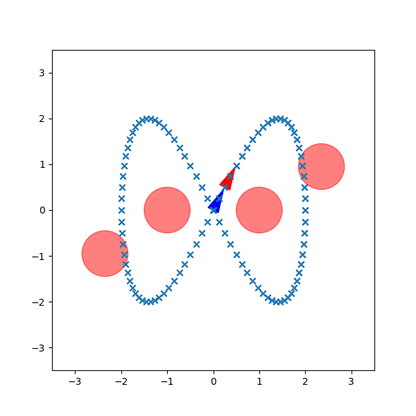
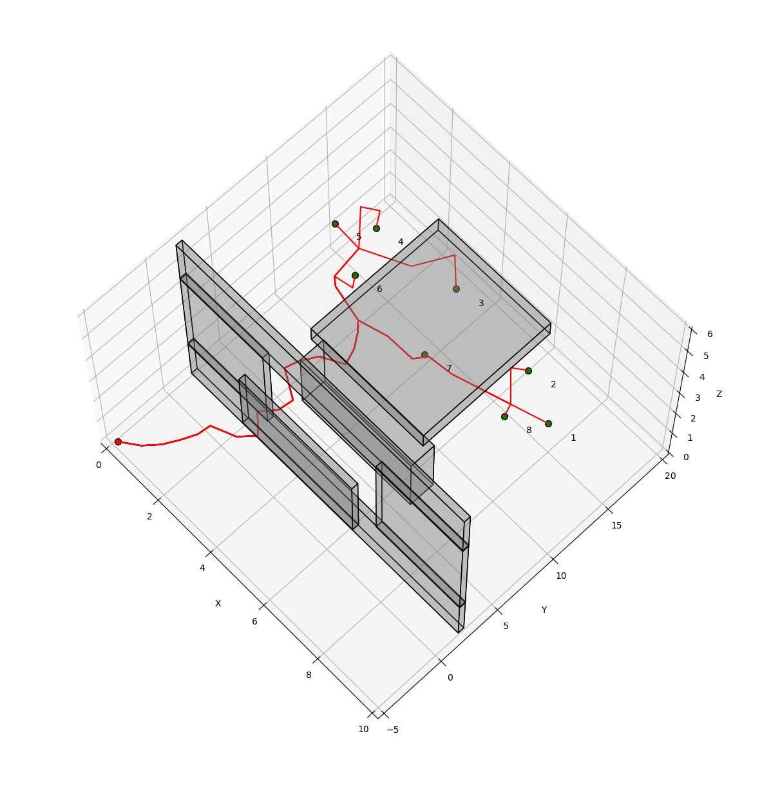
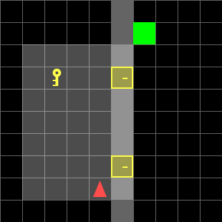
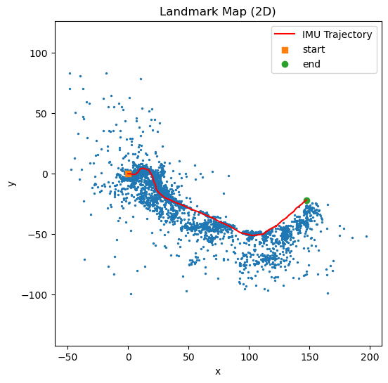
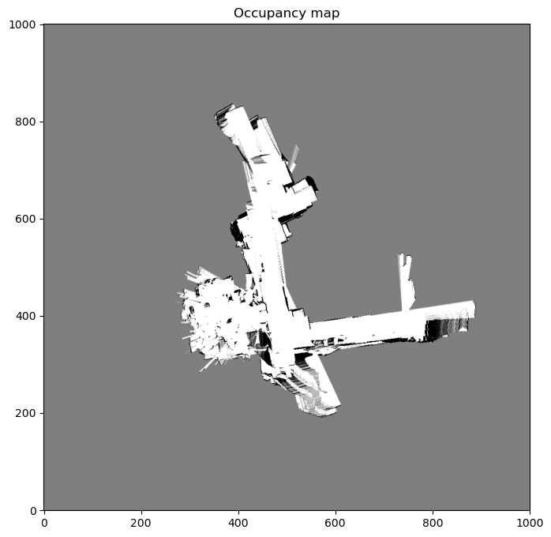
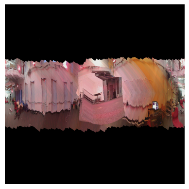

I'm a computer engineer at UC San Diego working across state estimation, planning, and control: from SLAM and sensor fusion to optimal control and embedded autonomy. Currently a researcher at the Existential Robotics Lab.
I'm Arihant Jain, a computer engineer finishing my B.S. at UC San Diego (GPA 3.78, major GPA 3.96) and continuing into a master's in ML/DS focused on robotic systems and control. My current work sits where perception, estimation, and decision-making meet: I like taking raw sensor streams and turning them into something a robot can actually act on.
Most of my time goes to visual perception and autonomy: understanding the world using a camera, sampling- and search-based planning, and optimal control for real platforms. At the Existential Robotics Lab I build latent world-dynamics models for safety filtering; at Triton Robotics I led the embedded stack, from entire system tuning to LiDAR-based autonomy and computer vision.
The projects below span two graduate robotics sequences, sensing & estimation and planning & optimal control, plus research and competition work. Each links to a full write-up.
Research & Robotics
Refactored the embedded codebase for a 10× performance gain with CI/CD, autotuned motor PID in simulation, and brought up autonomous navigation using Point-LIO with a 4D LiDAR, plus drivers for IMU and SPI, CAN, and UART.
Building latent representations and world-dynamics models of complex real-world interactions, with sampling-based signed-distance fields on latent dynamics to scale to high-DOF settings, and constraint/reward learning from visual embeddings.
Redesigned a multi-modal glove for better sensor reliability and built a real-time, multi-threaded pipeline for patient data collection and assessment, with HDBSCAN clustering to surface structure in the recorded data.
Planning & Optimal Control · ECE 276B

Project 3Reference tracking for a differential-drive car with two controllers: a CasADi receding-horizon CEC solver computed online, and a generalized policy iteration policy precomputed offline: compared on cost, collisions, and runtime.

Project 2A Rapidly-exploring Random Tree planner with a lightweight AABB collision checker for 3-D static and dynamic environments, reusing the tree across moving goals and tuning goal bias and steer distance for speed.

Project 1A key-and-door gridworld cast as an MDP and solved as a deterministic shortest path with a label-correcting algorithm, including a single global policy covering all unknown map configurations.
Sensing & Estimation · ECE 276A

Project 3An Extended Kalman Filter fusing IMU odometry on SE(3) with stereo-camera landmark observations to jointly localize the robot and map static features across three driving datasets.

Project 2ICP scan matching with Kabsch alignment for odometry, log-odds occupancy and texture mapping from RGB-D, and GTSAM factor-graph loop closure to correct drift on a differential-drive platform.

Project 1Quaternion orientation estimation via gradient descent on IMU gyro and accelerometer data, benchmarked against VICON ground truth, then timestamp-matched to camera frames to stitch cylindrical panoramas.
Live from GitHub
github.com/arugoa ↗Work experience
Complete education, experience, projects, and skills in one page, PDF.